2 R 💎
R é uma linguagem de programação de alto nível voltada para visualização e análise de dados. Com base na linguagem de programação S foi criada pelos estatísticos Ross Ihaka e Robert Gentleman no departamento de estatística da universidade de Auckland na Nova Zelândia. A linguagem R é mantida pelo grupo R Core Team.
O artigo publicado pela Tippmann (2015), mostra a crescente adesão do uso da linguagem R em diferentes áreas cientificas. A Figura 2.1 evidência o crescimento mencionado anteriomente.
Figure 2.1: Série temporal de citações dos pacotes feitos em R - Fonte: Tippmann (2015)
Como apresentado no capítulo anterior, o objetivo desta seção é apresentar o uso da linguagem de programação R para análise de dados espaciais, os quais compõem a ciência da geoinformação.
2.1 Tibble
As estruturas de dados (ED’s) do pacote base do R, por exemplo, data.frame e matrix, oferecem diversos métodos de adição, manipulação e exclusão de dados. No entanto, tais métodos possuem certas limitações impostas pela linguagem, para adicionar quaisquer mudanças nesses métodos é necessário editar o código-fonte dos mesmos. Com o objetivo de abstrair as complexidades e o alta verbosidade das estruturas de dados tradicionais, a comunidade cria diversos pacotes que buscam a integração e a fácil manipulação dos mesmos.
Neste minicurso, optamos por usar o pacote tibble do que o método data.frame oferecido pelo pacote base. No entanto, vamos usar o termo Data frame como estrutura de dados, a qual é implementada pelo pacote tibble.

Figure 2.2: Estrutura de dados: Vetor e Matriz
Podemos definir Data frame como uma matriz (Figura 2.2), composta por linhas e colunas, cujas colunas representam as variáveis (atributos) e as linhas representam observações. A Figura 2.3 apresenta um Data frame, a qual é possível observar as definições mencionadas anteriormente, desta forma, sabemos que o aluno José obteve 7.2 na disciplina de Álgebra Linear.
Figure 2.3: Representação de um Data frame - Fonte: GeeksforGeeks (2018)
O trecho de código a seguir apresenta a implementação do Data frame apresentado anteriormente.
# Importação do pacote
library(tibble)
# Criação do tibble
df_escola <- tibble::tibble(Aluno = c("José", "Maria", "Ana", "Carlos"),
`Álgebra Linear` = c(7, 10, 8, 7),
`Cálculo I` = c(8, 9, 10, 5),
`Eng. Software` = c(10, 9, 5, 9),
`PAD` = c(5, 7, 4, 9))
# Visualização dos dados
df_escola## # A tibble: 4 x 5
## Aluno `Álgebra Linear` `Cálculo I` `Eng. Software` PAD
## <chr> <dbl> <dbl> <dbl> <dbl>
## 1 José 7 8 10 5
## 2 Maria 10 9 9 7
## 3 Ana 8 10 5 4
## 4 Carlos 7 5 9 9O pacote tibble possui diversas vantagens em relação ao tradicional data.frame, por exemplo, ainda no tibble criado anteriormente, é possível observar os tipos de cada atributo. Com o objetivo de facilitar a etapa de análise de dados, o pacote tibble não faz a conversão de atributos do tipo character para factor de forma automática.
Outra grande vantagem do tibble é a interação com os métodos criados para o data.frame, esses provindos do pacote base, por exemplo, o método mean():
mean(df_escola$`Cálculo I`)## [1] 8Desta forma, podemos usar quaisquer métodos criados para uso no data.frame no tibble. O código a seguir mostra que o tibble criado possui três classes: tbl_df, tbl e data.frame. É possível observar que o tibble possui como classe comum o data.frame.
class(df_escola)## [1] "tbl_df" "tbl" "data.frame"Na subseção subsequente, vamos explicar com detalhes como realizar a leitura, escrita e manipulação de dados.
2.1.1 Tidyverse
Com o intuito de desenvolver um conjunto de ferramentas para realizar a leitura, escrita, manipulação e visualização de dados, o estatístico Wickham (2017) e seus colaboradores criaram o Tidyverse, o qual é apresentado na Figura abaixo ao lado esquerdo. Ao lado direito, é apresentado as etapas de um projeto de ciência de dados com aplicação no mundo real Schutt and OŃeil (2013).

Figure 2.4: Conjunto de pacotes do kit de ferramentas e etapas de um projeto de ciência de dados
Neste minicurso, vamos usar os pacotes readr, tibble, dplyr, magrittr e ggplot2. O pacote readr é utilizado para fazer leitura e escrita de dados. As próximas subseções descrevem com detalhes os pacotes citados.
2.1.1.1 Leitura e escrita de dados
No minicurso de Introdução à análise de dados, explicamos com detalhes a diferença entre cada formato de dados e suas respectivas aplicações.
Nesta subseção, vamos criar um conjunto de dados, da seguinte forma:
# Criação do tibble
df_solo <- tibble::tibble(label = c("Soja", "Milho", "Pastagem", "Vegetação"),
plant_agri = c(TRUE, TRUE, FALSE, FALSE),
plat_col = c("2019-09-01", "2019-01-10", "NA", "NA"))
# Visualização das observações iniciais do conjunto de dados
head(df_solo, 2)## # A tibble: 2 x 3
## label plant_agri plat_col
## <chr> <lgl> <chr>
## 1 Soja TRUE 2019-09-01
## 2 Milho TRUE 2019-01-10Podemos salvar os dados em diferentes formatos, sendo eles tabulares ou não. Para salvar os dados no formato json, pode ser feito desta forma:
# Importação do pacote
library(jsonlite)## Loading required package: methods # Transformando o tibble em json
df_solo_json <- jsonlite::toJSON(df_solo, pretty = TRUE)
# Visualização do json
df_solo_json## [
## {
## "label": "Soja",
## "plant_agri": true,
## "plat_col": "2019-09-01"
## },
## {
## "label": "Milho",
## "plant_agri": true,
## "plat_col": "2019-01-10"
## },
## {
## "label": "Pastagem",
## "plant_agri": false,
## "plat_col": "NA"
## },
## {
## "label": "Vegetação",
## "plant_agri": false,
## "plat_col": "NA"
## }
## ]Agora que o nosso dado está em json, podemos salvá-lo, da seguinte maneira:
# Escrita dos dados em formato json no arquivo dados_do_solo.json
jsonlite::write_json(df_solo_json, "../data/5_arquivos_parte_r/dados_do_solo.json")Para realizar a leitura:
# Leitura do arquivo em formato .json
df_solo <- jsonlite::read_json("../data/5_arquivos_parte_r/dados_do_solo.json", simplifyVector = TRUE)
# Visualização dos dados
cat(df_solo)## [
## {
## "label": "Soja",
## "plant_agri": true,
## "plat_col": "2019-09-01"
## },
## {
## "label": "Milho",
## "plant_agri": true,
## "plat_col": "2019-01-10"
## },
## {
## "label": "Pastagem",
## "plant_agri": false,
## "plat_col": "NA"
## },
## {
## "label": "Vegetação",
## "plant_agri": false,
## "plat_col": "NA"
## }
## ]De forma semelhante a leitura e escrita do arquivo em formato json, podemos salvar nossos dados de solo em formato tabular, porém, vamos usar o pacote readr, da seguinte forma:
# Importação do pacote
library(readr)
# Escrita dos dados em formato csv no arquivo dados_do_solo.csv
readr::write_csv(df_solo, "../data/5_arquivos_parte_r/dados_do_solo.csv")Para fazer a leitura:
# Leitura do arquivo em formato .csv
df_solo_csv <- readr::read_csv("../data/5_arquivos_parte_r/dados_do_solo.csv")## Parsed with column specification:
## cols(
## label = col_character(),
## plant_agri = col_logical(),
## plat_col = col_date(format = "")
## ) # Visualização do conjunto de dados
df_solo_csv## # A tibble: 4 x 3
## label plant_agri plat_col
## <chr> <lgl> <date>
## 1 Soja TRUE 2019-09-01
## 2 Milho TRUE 2019-01-10
## 3 Pastagem FALSE NA
## 4 Vegetação FALSE NANo entanto, nem tudo são flores e tão simples quanto mostramos. Os métodos apresentados possuem diversos parâmetros que ajudam a lidar com dados mal formatados e ruidosos, então, salientamos que nosso exemplo é de cunho acadêmico. Como diz um dos criadores do Tidyverse:
“Os conjuntos de dados arrumados são todos iguais, mas todos os conjuntos de dados desorganizados são desorganizados à sua própria maneira.” - Hadley Wickham
2.1.2 Manipulação de dados
Nesta subseção, vamos nos basear no nosso livro-texto de Introdução à Análise de Dados, fique à vontade para contribuir com o material deste curso 😞.
Para selecionar, filtrar e agrupar nossos dados, vamos usar o pacote dplyr, o qual está contido no kit de ferramentas Tidyverse. Vamos iniciar criando mais um conjunto de dados:
# Criação do tibble
df_escola <- tibble::tibble(
id = c(1, 2, 3, 4, 5, 6),
curso = c("Historia", "Historia", "Matemática",
"Estatística", "Matemática", "Estatística"),
media = c(2.1, 3.5, 4.0, 1.0, NA, 4.9),
conceito = c("C", "B", "A",
"C", "NA", "A"))
knitr::kable(df_escola)| id | curso | media | conceito |
|---|---|---|---|
| 1 | Historia | 2.1 | C |
| 2 | Historia | 3.5 | B |
| 3 | Matemática | 4.0 | A |
| 4 | Estatística | 1.0 | C |
| 5 | Matemática | NA | NA |
| 6 | Estatística | 4.9 | A |
Entre os diversos métodos oferecidos pelo pacote dplyr, vamos usar os seguintes:
select- Seleção de atributos de um data.frame ou tibblefilter- Filtro de observações de acordo com uma lógica pré-definidamutate- Criação de novos atributosgroup_by- Criação de grupos para aplicação de funções de agregaçãosummarize- Função de agregação aplicada em grupos
Vamos manipular nosso tibble com base nos métodos apresentados:
# importação do pacote dplyr
suppressMessages(library(dplyr))
# Filtro dos alunos com conceito igual a "A"
filtro <- dplyr::filter(df_escola, df_escola$conceito == "A")
# Seleção dos atributos "curso", "conceito" e "media"
selecao <- dplyr::select(filtro, curso, conceito, media)
# Criação de grupos por curso
grupo <- dplyr::group_by(selecao, curso)
# Agregação dos cursos pela média
media <- dplyr::summarize(grupo, media_grupo = mean(media))
# Visualização dos dados
knitr::kable(media)| curso | media_grupo |
|---|---|
| Estatística | 4.9 |
| Matemática | 4.0 |
Basicamente, filtramos pelo atributo conceito, selecionamos os atributos curso, conceito e media, agrupamos pelos cursos e tiramos a média dos grupos formados 🐻. Mas, ficou muito grande, podemos diminuir a quantidade de atribuições utilizando pipe, desta forma:
# importação do pacote magrittr
library(magrittr)
# Uso do pipe (%>%) para filtrar, selecionar, agrupar e aplicar função de
# agregação
df <- df_escola %>% dplyr::filter(conceito == "A") %>%
dplyr::select(curso, conceito, media) %>%
dplyr::group_by(curso) %>%
dplyr::summarize(media_grupo = mean(media))
# Visualização dos dados
knitr::kable(df)| curso | media_grupo |
|---|---|
| Estatística | 4.9 |
| Matemática | 4.0 |
A principal função do pipe é tornar o código mais limpo e reprodutível. Desta forma, encerramos os métodos básicos de manipulação de dados. Na próxima subseção, vamos usar o pacote sf para a leitura, escrita e manipulação de dados espaciais. # Introdução à Geociências 🌏
2.2 SF
O pacote sf Pebesma (2018) implementa as simple features explicadas no capítulo 1 com base nas estruturas de data.frame ou tibble, as principais características do pacote pode ser vista na lista abaixo: - Representação nativa em R de todos os 17 tipos das simple features para todas as dimensões (XY, XYZ, XYM, XYZM). - Interface para o GEOS que suporta a DE9-IM. - Interface para o GDAL, a qual fornece suporte para todas opções de drivers, tipo de atributo Date e DateTime e sistema de coordenadas de referência através do PROJ. - Uso de serializações escritas em Rcpp para otimizar o I/O com GDAL e GEOS. - Leitura e escrita de bancos de dados com extensões espaciais, por exemplo PostGIS.
Lista retirada da página de documentação do pacote
sf
2.2.1 Tipos Geométricos
Como apresentado no capítulo 1, podemos representar os tipos geométricos com pontos, linhas e polígonos. Nesta subseção, vamos apresentar alguns tipos geométricos oferecidos pelo pacote sf que segue a implementação padrão da OGC. Para criarmos um simples POINT:
# Impotação do pacote
library(sf)## Linking to GEOS 3.6.2, GDAL 2.2.3, PROJ 4.9.3 # Criação de um ponto no plano
ponto <- sf::st_point(c(3, 4))
ponto## POINT (3 4)Para criarmos uma LINESTRING:
# Criação dos segmentos de reta
linha <- rbind(c(2, 1), c(4, 4), c(8, 2), c(4, 2) )
# Criação do linestring
linestring <- sf::st_linestring(linha)
linestring## LINESTRING (2 1, 4 4, 8 2, 4 2)Por fim, para criarmos um polígono sem buracos:
# Criação dos segmentos de reta
poligono <- rbind(c(2, 1), c(1, 2), c(1, 5), c(5, 3), c(2, 1))
# Criação do poligono
polygon <- sf::st_polygon(list(poligono))
polygon## POLYGON ((2 1, 1 2, 1 5, 5 3, 2 1))Os tipos geométricos criados são apresentados abaixo:
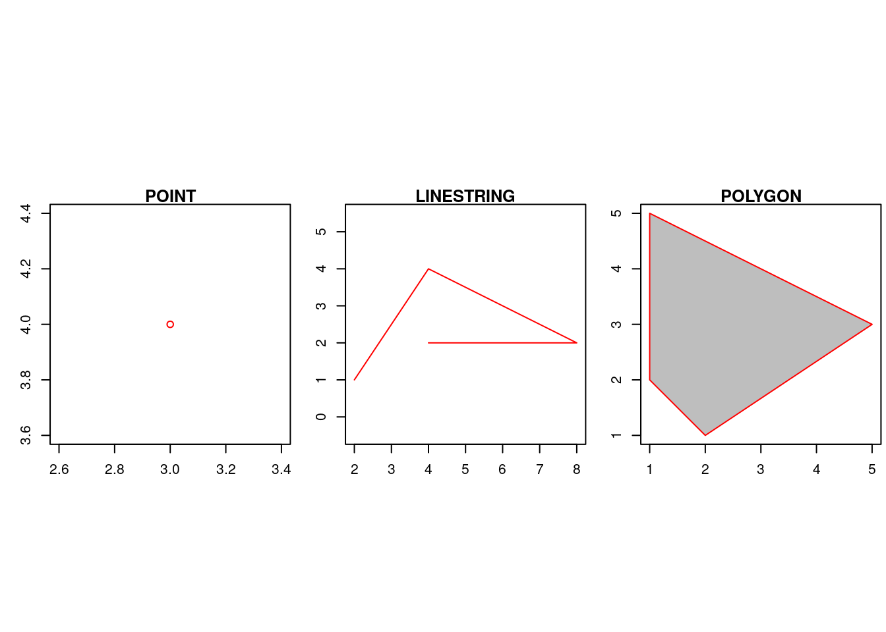
Como apresentado no capítulo 1, os tipos geométricos podem ser usados em conjunto: MULTIPOINT, MULTILINESTRING, MULTIPOLYGON e GEOMETRYCOLLECTION. O trecho de código abaixo apresenta a criação dos tipos mencionados:
# Criação de pontos
pontos <- rbind(c(2,4), c(1,2), c(3,1), c(4,3), c(3,2))
# Criação do tipo geométrico multipoint
multipoint <- sf::st_multipoint(pontos)
# Criação dos segmentos de reta
linhas_s1 <- rbind(c(1,3), c(4,4), c(5,2), c(3,0),c(1,1))
linhas_s2 <- rbind(c(1,4), c(4,5), c(1,5))
# Criação do tipo geométrico multiline
multilinestring <- sf::st_multilinestring(list(linhas_s1, linhas_s2))
# Crição dos polígonos
poligono_p1 <- rbind(c(2,3), c(6,1), c(2,1), c(2,3))
poligono_p2 <- rbind(c(6,5), c(4,4), c(6,2), c(8,4), c(6,5))
poligono_p2_1 <- rbind(c(5,4), c(6,3), c(6,4), c(5,4))
# Criação do tipo geométrico multipolygon
multipolygon <- sf::st_multipolygon(list(list(poligono_p1), list(poligono_p2, poligono_p2_1)))
# Criação do tipo geométrico
geometrycollection <- sf::st_geometrycollection(list(multipoint, multilinestring, multipolygon))Os tipos geométricos criados são apresentados abaixo:

OS tipos geométricos que criamos são objetos da classe sfg (Simple Feature Geometries), os quais possuem apenas um único atributo, correspondem aos pontos no plano ou espaço. Para verificar a classe dos objetos:
# Verificação da classe do tipo geométrico criado
class(multipoint)## [1] "XY" "MULTIPOINT" "sfg"Podemos representar uma lista de tipos geométricos com a classe sfc (Simple Feature Columns), a qual cria atributos de objetos sfg, por exemplo:
# Definição dos pontos
ponto_1 <- c(2,4)
linha_1 <- rbind(c(1,2), c(3,4))
# Criação dos objetos sfg
point <- sf::st_point(ponto_1)
linestring <- sf::st_linestring(linha_1)
# Criação de um objeto sfc
sfc_obj <- sf::st_sfc(point, linestring)
sfc_obj## Geometry set for 2 features
## geometry type: GEOMETRY
## dimension: XY
## bbox: xmin: 1 ymin: 2 xmax: 3 ymax: 4
## epsg (SRID): NA
## proj4string: NA## POINT (2 4)## LINESTRING (1 2, 3 4)Observe que, diferentemente dos tipos geométricos da classe sfg, a classe sfc apresenta diferentes características, como a projeção proj4string, ID do sistema de referência geográfica epsg, bounding box bbox e a dimensão dimension.
No dia-a-dia vamos trabalhar com dados vetoriais provindos de diversas fontes, como IBGE e INPE. Logo, não vamos precisar criar nossos tipos geométricos e sim realizar a leitura dos arquivos que recebemos. Na subseção seguinte, vamos aprender como fazer a leitura de arquivos vetoriais.
2.2.2 Leitura e escrita de dados vetoriais
Os dados usados nesta subseção se encontram disponíveis em data neste diretório. O código abaixo apresenta a leitura do arquivo vetorial que contêm os estados brasileiros:
# Leitura do arquivos .shp que contêm as unidades federativas
shp_brazil <- sf::read_sf("../data/1_estados_do_brasil_shape/Brasil.shp")
# Visualização dos atributos .shp
head(shp_brazil, 4)## Simple feature collection with 4 features and 4 fields
## geometry type: MULTIPOLYGON
## dimension: XY
## bbox: xmin: -73.99094 ymin: -11.14449 xmax: -35.15167 ymax: 4.437122
## epsg (SRID): NA
## proj4string: +proj=longlat +ellps=aust_SA +no_defs
## # A tibble: 4 x 5
## ESTADOS REGIAO COD_UF UF geometry
## <chr> <chr> <dbl> <chr> <MULTIPOLYGON [°]>
## 1 "Acre" Norte 12 AC (((-73.80098 -7.111453, -73.74084 -7.143186, -…
## 2 "Alagoas" Nordes… 27 AL (((-36.39119 -10.50082, -36.39864 -10.49789, -…
## 3 "Amap\xe… Norte 16 AP (((-51.3738 -0.3705301, -51.37337 -0.3671281, …
## 4 "Amazona… Norte 13 AM (((-73.80098 -7.111453, -73.80106 -7.111288, -…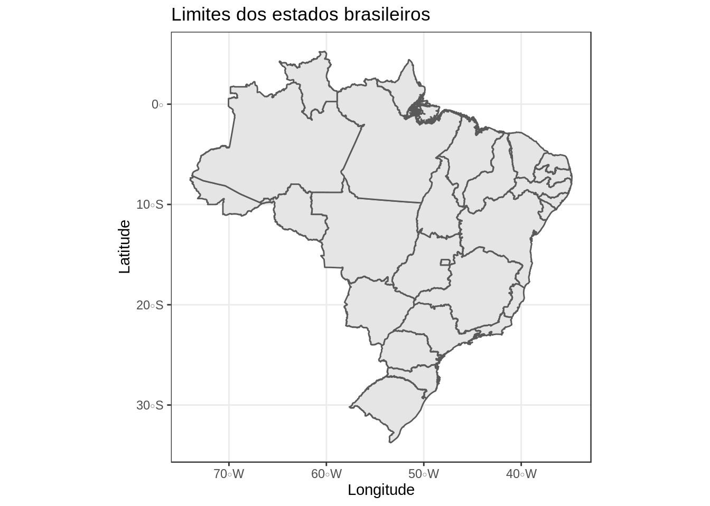
Verificação da classe do arquivo:
class(shp_brazil)## [1] "sf" "tbl_df" "tbl" "data.frame"Diferentemente dos tipos geométricos que criamos anteriormente (sfg), objetos da classe sf possuem atributos que correspondem ao tipo geométricos e as características do dado vetorial, ou seja, são um junção entre as classes sfge sfc. Por exemplo, é possível observar o tipo geométrico dos estados brasileiros (MULTIPOLYGON), bem como as regiões de cada estado (REGIAO), representadas por um atributo discreto.
O pacote sf, utilizando como base o GDAL, fornece suporte de leitura e escrita para diversos formatos, tais como: GeoJSON e KML. O código abaixo mostra como salvar os tipos geométricos de criamos anteriormente:
# Transformando para texto
gc_text <-
sf::st_as_text(geometrycollection)
# Transformando para objeto sfc
gc_sfc <- sf::st_as_sfc(gc_text)
# Escrita do tipo geométrico geometry collection em .shp
sf::write_sf(gc_sfc, "./dados/geometrycollection_curso.shp")Um breve resumos das classes do pacote SF:
sfgÚnico objeto geométrico, por exemplo,POINT.sfcJunção de tipos geométricos da classesfg. Possui informações como projeção e sistema de referência geogŕafica.sfJunção das classessfgesfc. Contêm atributos correspondentes ao tipo geométricos, bem como atributos discretos, categóricos que representam características do objeto.
Agora que aprendemos a diferença entre cada classe do pacote sf e como fazer a leitura e escrita de dados vetoriais, na subseção seguinte vamos aprender sobre os relacionamentos espaciais, de acordo com a Matriz de 9-interseções Estendida Dimensionalmente (DE-9IM).
2.2.3 Relacionamentos Espaciais
Para realizar a análise de dados espaciais é necessário o uso de diversos métodos espaciais, com a finalidade de verificar se dois objetos possuem alguma relação, por exemplo, para identificar a quantidade de focos de queimada no estado de São Paulo. Assim, o uso de tais métodos se tornam indispensáveis durante a manipulação de dados espaciais.
Os métodos apresentados nesta subseção:
Equals- Verifica se duas geometrias são iguais;Disjoint- Verifica se duas geometrias são disjuntas;Touches- Verifica se duas geometricas se tocam;Crosses- Verifica se duas geometricas se cruzam;Within- Verifica se a geometria A está contida em B;Contains- Verifica se a geometria B contêm;Overleaps- Verifica se duas geometrias se sobrepõem;Intersects- Verifica se duas geometricas se interseccionam.
2.2.3.1 Equals
# Definição dos pontos
poligono_1 <- rbind(c(1,1), c(1,5), c(5,5), c(1,1))
poligono_2 <- rbind(c(5,3), c(5,5), c(3,5), c(1,5),
c(1,3), c(1,1), c(3,1), c(5,1),
c(5,3))
# Criação dos tipos geométricos
polygon_a <- sf::st_polygon(list(poligono_1))
polygon_b <- sf::st_polygon(list(poligono_2))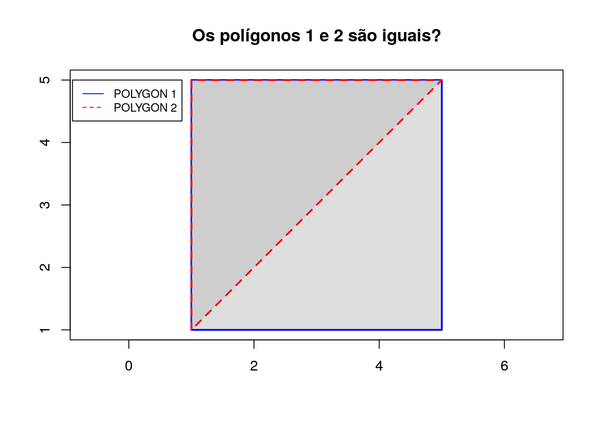
Para saber se duas geometrias são iguais, usa-se o métodos st_equals:
# Verifica se duas geometrias são iguais
sf::st_equals(polygon_a, polygon_b, sparse = FALSE)## [,1]
## [1,] FALSEO retorno do método é um lista com tamanho 1, com valores binários, TRUE ou FALSE. Desta forma, os polígonos criados não são iguais, pois o polígono B possui mais pontos. O código abaixo a apresenta a verificação de dois pontos:
# Criação dos pontos
ponto_1 <- sf::st_point(c(1,1))
ponto_2 <- sf::st_point(c(1,1))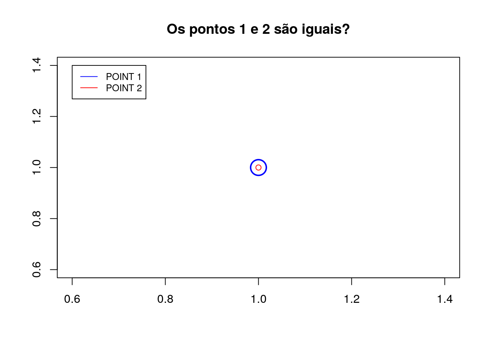
# Verifica se duas geometrias são iguais
sf::st_equals(ponto_1, ponto_2, sparse = FALSE)## [,1]
## [1,] TRUEPara verificar se duas geometricas são exatamente iguais, use
st_equals_exact.
2.2.3.2 Disjoint
# Criação dos linestrings
segmento_1 <- rbind(c(1.5,5), c(3,5), c(4,6), c(6,5))
segmento_2 <- rbind(c(1,6), c(1,4), c(4,4))
# Criação dos tipos geométricos linestring
linestring_1 <- sf::st_linestring(segmento_1)
linestring_2 <- sf::st_linestring(segmento_2)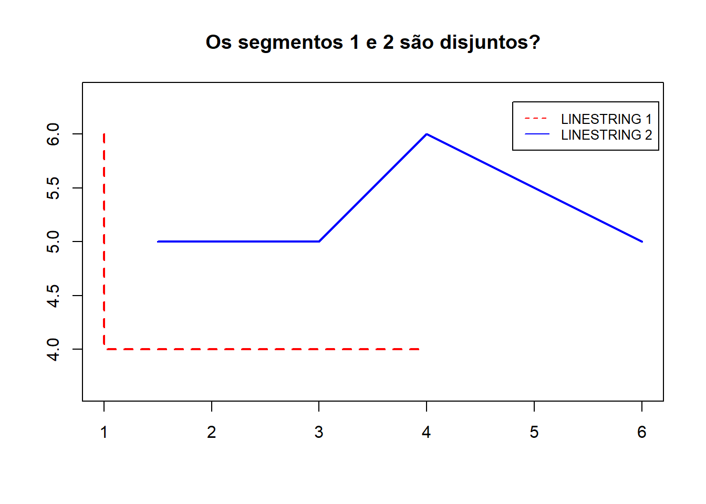
Para saber se duas geometrias são disjuntas, usa-se o métodos st_disjoint:
# Verifica se duas geometrias são disjuntas
sf::st_disjoint(linestring_1,linestring_2, sparse = FALSE)## [,1]
## [1,] TRUEOutro exemplo:
# Criação dos polígonos
poligono_1 <- rbind(c(1,1), c(1,2), c(3,2), c(3,2),
c(3,1), c(1,1))
poligono_2 <- rbind(c(3,3), c(5,3), c(5,2),
c(3,2), c(3,3))
# Criação dos tipos geométricos polygons
polygon_1 <- sf::st_polygon(list(poligono_1))
polygon_2 <- sf::st_polygon(list(poligono_2))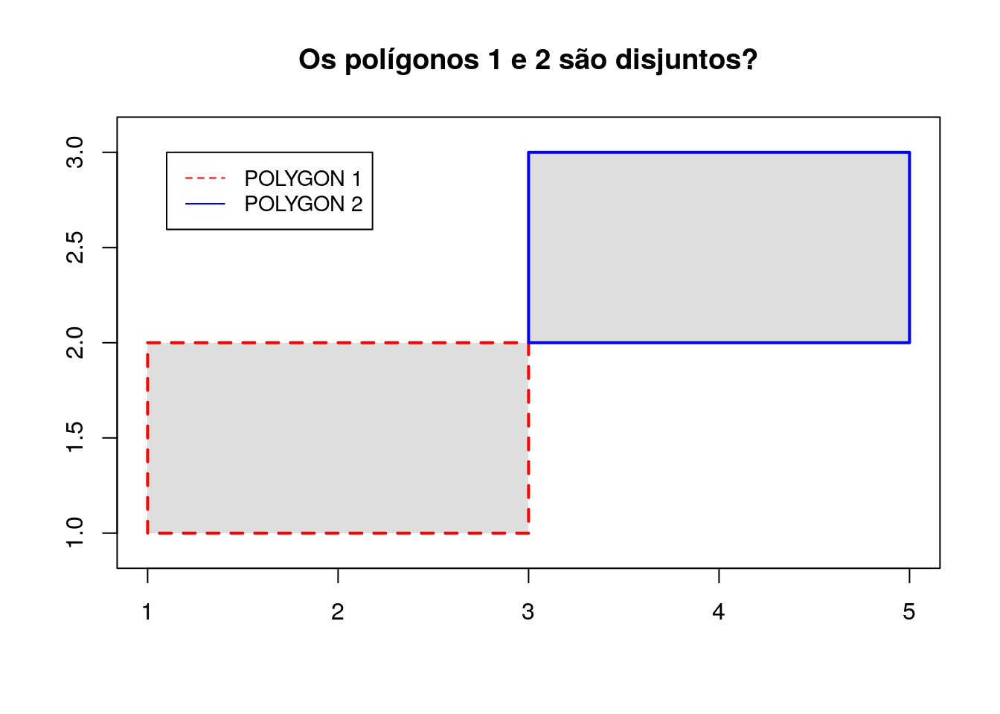
# Verifica se duas geometrias são disjuntas
sf::st_disjoint(polygon_1,polygon_2, sparse = FALSE)## [,1]
## [1,] FALSE2.2.3.3 Touches
# Criação dos polígonos
poligono_1 <- rbind(c(1, 1), c(1, 3), c(4, 3), c(4,1), c(1,1))
poligono_2 <- rbind(c(4,2), c(4,4), c(6,4), c(6,2), c(4,2))
# Criação dos tipos geométricos
polygon_1 <- sf::st_polygon(list(poligono_1))
polygon_2 <- sf::st_polygon(list(poligono_2))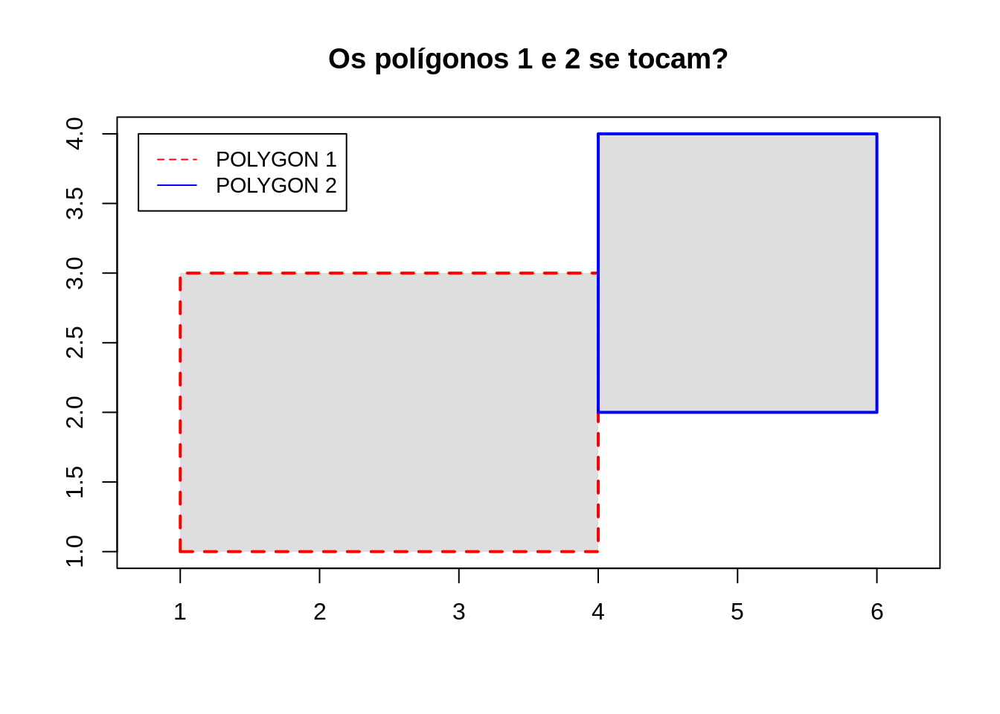
Para verificar se duas geometrias se tocam, usa-se o método st_touches:
# Verifica se duas geometrias se tocam
sf::st_touches(polygon_1, polygon_2, sparse = FALSE)## [,1]
## [1,] TRUEOutro exemplo:
# Criação dos segmentos
segmento_1 <- rbind(c(5,6), c(5,8), c(7,8))
segmento_2 <- rbind(c(6,6), c(6,9))
# Criação dos tipos geométricos
linestring_1 <- sf::st_linestring(segmento_1)
linestring_2 <- sf::st_linestring(segmento_2)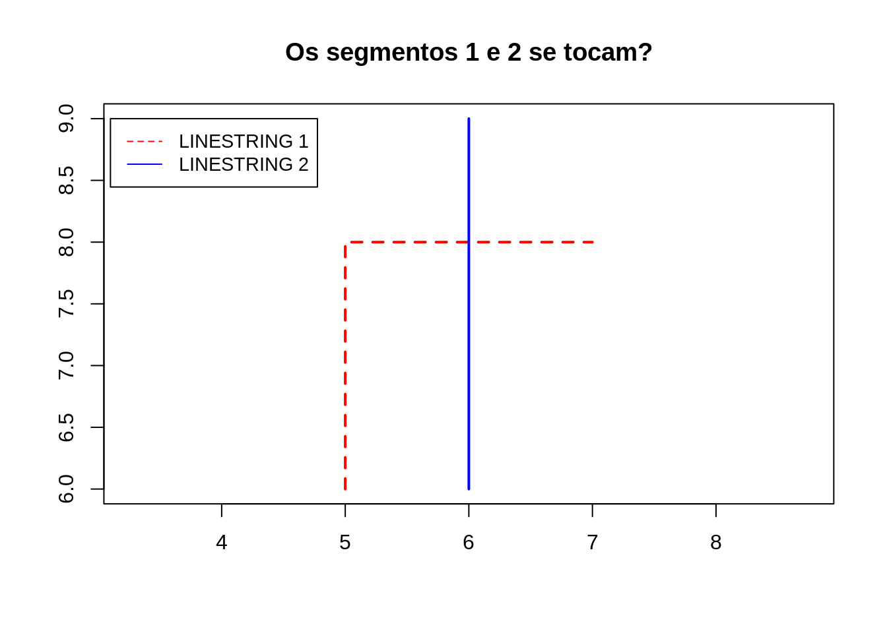
# Verifica se duas geometrias se tocam
sf::st_touches(linestring_1, linestring_2, sparse = FALSE)## [,1]
## [1,] FALSE2.2.3.4 Crosses
# Criação da reta e polígono
segmento_1 <- rbind(c(11,5), c(13,5), c(13,6))
poligono_1 <- rbind(c(12,4), c(12,7), c(15,4), c(12,4))
# Criação dos objetos geométricos
linestring_1 <- sf::st_linestring(segmento_1)
polygon_1 <- sf::st_polygon(list(poligono_1))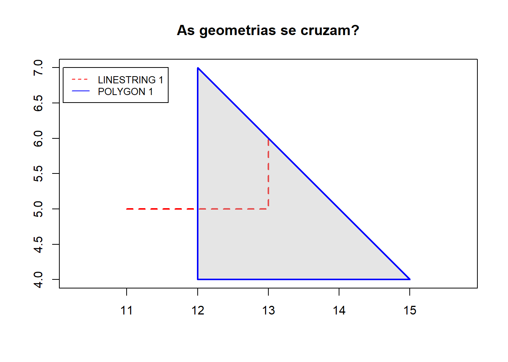
Para verificar se duas geometrias se tocam, usa-se o método st_touches:
# Verifica se duas geometrias se cruzam
sf::st_crosses(linestring_1, polygon_1, sparse = FALSE)## [,1]
## [1,] TRUEOutro exemplo:
# Criação da reta e dos pontos
segmento_1 <- rbind(c(8,1), c(8,3), c(10,3))
ponto_1 <- rbind(c(9,2), c(9,3), c(10,2))
# Criação dos objetos geométricos
linestring_1 <- sf::st_linestring(segmento_1)
multipoint_1 <- sf::st_multipoint(ponto_1)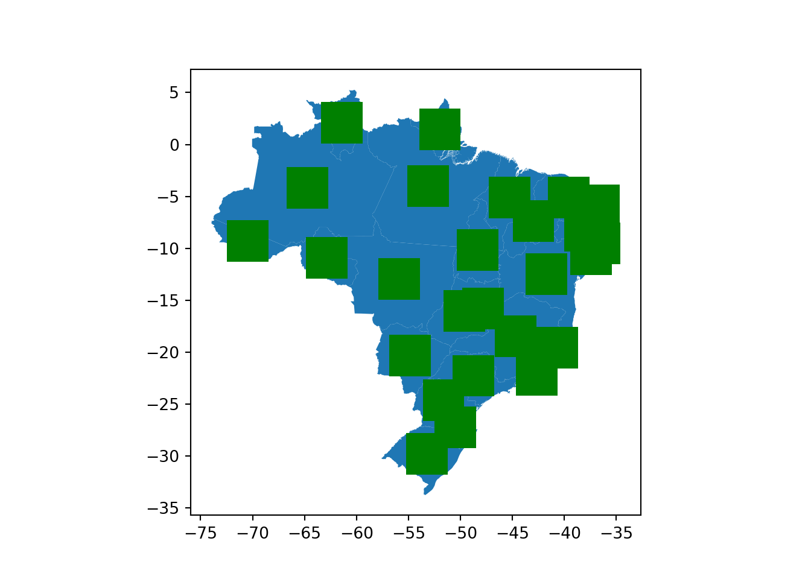
# Verifica se duas geometrias se cruzam
sf::st_crosses(linestring_1, multipoint_1, sparse = FALSE)## [,1]
## [1,] TRUE2.2.3.5 Within
# Criação dos polígonos
poligono_1 <- rbind(c(2,2), c(2,4), c(4,4), c(4,2), c(2,2))
poligono_2 <- rbind(c(1,1), c(1,5), c(5,5), c(5,1), c(1,1))
# Criação dos objetos geométricos
polygon_1 <- sf::st_polygon(list(poligono_1))
polygon_2 <- sf::st_polygon(list(poligono_2))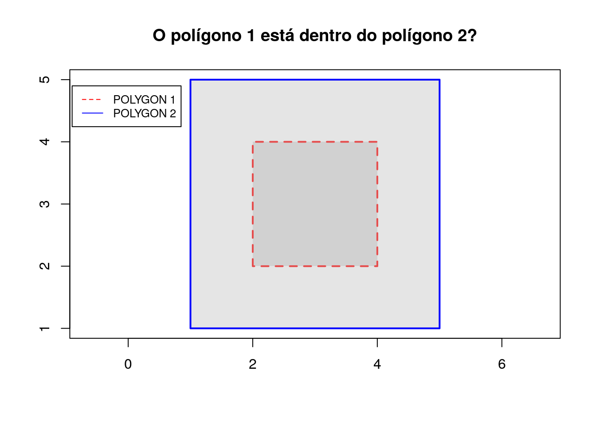
Para verificar se o polígono 1 está dentro do polígono 2, usa-se o método st_within:
# Verifica se o poligono 1 está dentro do polígono 2
sf::st_within(polygon_1, polygon_2, sparse=FALSE)## [,1]
## [1,] TRUE2.2.3.6 Contains
# Criação do ponto e do polígono
poligono_1 <- rbind(c(1,6), c(1,9), c(5,9), c(5,6), c(1,6))
ponto_1 <- c(3,8)
# Criação dos tipos geométricos
polygon_1 <- sf::st_polygon(list(poligono_1))
point_1 <- sf::st_point(ponto_1)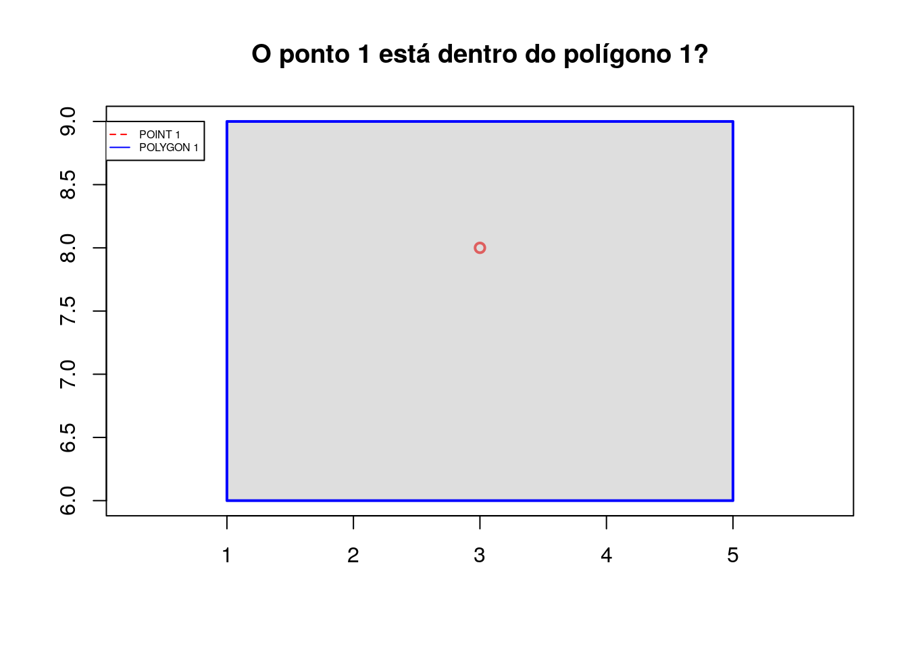
Para verificar se o polígono 1 contém o ponto 1, usa-se o método st_contains:
# Verifica se o poligono 1 contém o ponto 1
sf::st_contains(polygon_1, point_1, sparse = FALSE)## [,1]
## [1,] TRUE2.2.3.7 Overlaps
# Criação dos polígonos
poligono_1 <- rbind(c(7,1), c(7,3), c(10,3), c(10,1), c(7,1))
poligono_2 <- rbind(c(13,1), c(9,2), c(13,4), c(13,1 ))
# Criação dos tipos geométricos
polygon_1 <- sf::st_polygon(list(poligono_1))
polygon_2 <- sf::st_polygon(list(poligono_2))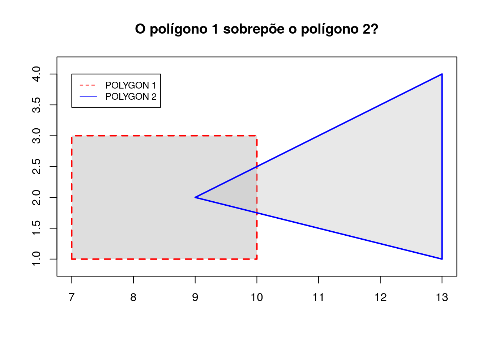
Para verificar se o polígono 1 sobrepõe o polígono 2, usa-se o método st_overlaps:
# Verifica se o poligono 1 sobrepõe o poligono 2
sf::st_overlaps(polygon_1, polygon_2, sparse = FALSE)## [,1]
## [1,] TRUEOutro exemplo:
# Criação das retas
segmento_1 <- rbind(c(8,8), c(12,8))
segmento_2 <- rbind(c(9,6), c(9,8), c(11,8), c(11,9))
# Criação dos tipos geométricos
linestring_1 <- sf::st_linestring(segmento_1)
linestring_2 <- sf::st_linestring(segmento_2)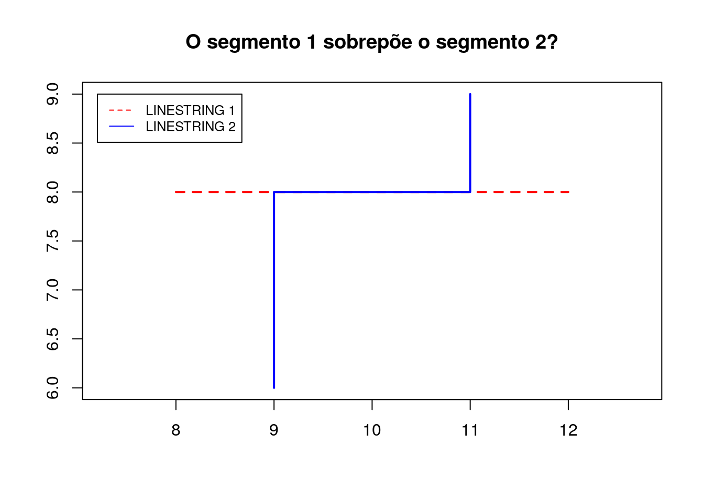
# Verifica se a linestring 1 sobrepõe a linestring 2
sf::st_overlaps(linestring_1, linestring_2, sparse = FALSE )## [,1]
## [1,] TRUE2.2.3.8 Intersects
# Criação dos polígonos
poligono_1 <- rbind(c(1,7), c(1,9), c(5,9), c(5,7), c(1,7))
poligono_2 <- rbind(c(4,6), c(4,8), c(8,8), c(8,6), c(4,6))
# Criação dos tipos geométricos
polygon_1 <- sf::st_polygon(list(poligono_1))
polygon_2 <- sf::st_polygon(list(poligono_2))
Para verificar se o polígono 1 intersecta o polígono 2, usa-se o método st_intersects:
sf::st_intersects(polygon_1, polygon_2, sparse=FALSE)## [,1]
## [1,] TRUE2.2.4 Operadores Métricos
Os operadores e os dados apresentados nesta subseção, estão presentes na seção de Python e PostGIS. A seção em Python cobre com mais detalhes cada operador. Nesta subseção vamos usar tais operadores métricos: - st_area - Área de um tipo geométrico poligonal - st_length - Comprimento de tipos geométricos 1D (LINESTRING)
2.2.4.1 Área
Vamos calcular a área do estado de estado do Rio de Janeiro, para isso vamos utilizar tudo que aprendemos até agora:
# Importação do ggplot2 para visualização de dados
library(ggplot2)
# Leitura do shp que contém os estados brasileiros
shp_brazil <- sf::read_sf("../data/1_estados_do_brasil_shape/Brasil.shp")
# Seleção do estado do Rio de Janeiro
estado_rj <- shp_brazil %>% dplyr::filter(ESTADOS=="Rio de Janeiro")
# Visualização
ggplot2::theme_set(ggplot2::theme_bw())
ggplot2::ggplot() +
geom_sf(data = estado_rj) +
labs(x = "Longitude",
y = "Latitude",
title = "Limites do estado do Rio de Janeiro")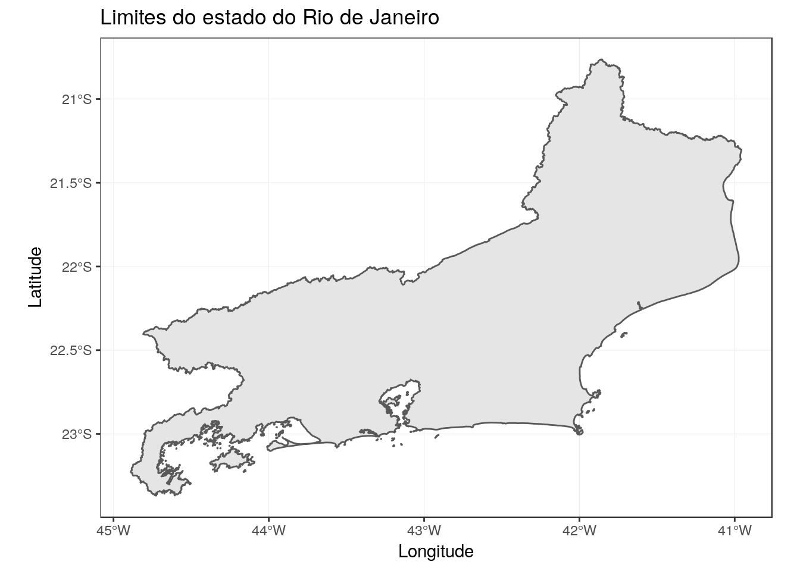
# Cálculo da área em metros quadrados
area_rj <- sf::st_area(estado_rj)
area_rj## 43791834545 [m^2]Podemos converter a área para \(Km^2\) para facilitar a comparação dos resultados.
# Conversão para km^2
area_rj <- area_rj/1e+6
area_rj## 43791.83 [m^2]Segundo o IBGE (Instituto Brasileiro de Geografia e Estatística), a área do estado do Rio de Janeiro correspnde a \(43.781,588 Km^2\) e a área da retornada pela nossa consulta \(43.791,83 Km^2\). A diferença foi relativamente baixa, mostrando a eficácia do método no cálculo da área.
2.2.4.2 Comprimento
Assim como a área, vamos utilizar todos os conceitos vistos até agora no minicurso. Vamos medir o comprimento do Rio Paraíba do Sul, o trecho de código abaixo apresenta a leitura dos rios de todo o território brasileiro:
Todos os dados usados neste minicurso estão no diretório
data
# Leitura do shapefile
rios_brazil <- sf::read_sf("../data/4_rios_brasil/Brasil_rios.shp")
# Visualização dos dados
head(rios_brazil, 4)## Simple feature collection with 4 features and 7 fields
## geometry type: MULTILINESTRING
## dimension: XY
## bbox: xmin: -67.34078 ymin: -6.052164 xmax: -36.73497 ymax: 1.997553
## epsg (SRID): NA
## proj4string: +proj=longlat +ellps=aust_SA +no_defs
## # A tibble: 4 x 8
## OBJECTID IDRIO CORIO NORIOCOMP NUDISTBACR NUCOMPRIO DSVERSAO
## <dbl> <dbl> <chr> <chr> <dbl> <dbl> <chr>
## 1 1 47715 7516… Rio Cani… 63.8 134. BHO 201…
## 2 2 35341 7522… Riacho C… 346. 42.1 BHO 201…
## 3 3 36318 7561… Riacho C… 116. 45.9 BHO 201…
## 4 4 50455 48_0 Rio Negro 1430. 1347. BHO 201…
## # … with 1 more variable: geometry <MULTILINESTRING [°]>Vamos filtrar pelo Rio Paraíba do Sul:
# Filtro do rio paraiba do sul
rio_paraiba <- rios_brazil %>% dplyr::filter(NORIOCOMP == "Rio Paraíba do Sul")
# Comprimeiro do rio paraiba do sul
rio_paraiba_comp <- sf::st_length(rio_paraiba)
rio_paraiba_comp## 868441.2 [m]Para fazer a conversão vamos utilizar o pacote units:
# Importação do pacote units
library(units)## udunits system database from /usr/share/xml/udunits # Conversão para km
rio_paraiba_comp <- units::set_units(rio_paraiba_comp, km)
rio_paraiba_comp## 868.4412 [km]Segundo a Wikipedia, o comprimento do Rio Paraíba do Sul correponde a \(1.137 Km\) e o nosso método obteve \(\approx 868 Km\).
Os exercícios apresentados foram retirados do material da disciplina de Banco de Dados Geográficos
2.2.5 Sistemas de referências
Como apresentado no capítulo 1, podemos representar nossos dados espaciais utilizando diversos tipos de projeções. Desta forma, nesta subseção vamos aprender como realizar a conversão e a transformação dos nossos dados. O trecho de código abaixo mostra como verificar qual a projeção dos nossos dados.
# Verifica o sistema de referencia geográfica
sf::st_crs(shp_brazil)## Coordinate Reference System:
## No EPSG code
## proj4string: "+proj=longlat +ellps=aust_SA +no_defs"O trecho de código acima mostra que nenhum EPSG foi definido, para conveter podemos usar o mesmo método:
# Conversão do sistema de referência geográfica
sf::st_crs(shp_brazil) <- 4326## Warning: st_crs<- : replacing crs does not reproject data; use st_transform for
## that sf::st_crs(shp_brazil)## Coordinate Reference System:
## EPSG: 4326
## proj4string: "+proj=longlat +datum=WGS84 +no_defs"Agora que definimos nosso ESPG, vamos visualizar as coordenadas geográficas:
# Visualização das três primeiras localizações
head(shp_brazil$geometry, 3)## Geometry set for 3 features
## geometry type: MULTIPOLYGON
## dimension: XY
## bbox: xmin: -73.99094 ymin: -11.14449 xmax: -35.15167 ymax: 4.437122
## epsg (SRID): 4326
## proj4string: +proj=longlat +datum=WGS84 +no_defs## MULTIPOLYGON (((-73.80098 -7.111453, -73.74084 ...## MULTIPOLYGON (((-36.39119 -10.50082, -36.39864 ...## MULTIPOLYGON (((-51.3738 -0.3705301, -51.37337 ...É possível observar que as coordenadas estão em graus, no entanto, e se quisermos trabalhar com metros? É só fazer a conversão?
# Conversão para metros usando WGS 84 na zona 23S
sf::st_crs(shp_brazil) <- 32723## Warning: st_crs<- : replacing crs does not reproject data; use st_transform for
## that head(shp_brazil$geometry, 3)## Geometry set for 3 features
## geometry type: MULTIPOLYGON
## dimension: XY
## bbox: xmin: -73.99094 ymin: -11.14449 xmax: -35.15167 ymax: 4.437122
## epsg (SRID): 32723
## proj4string: +proj=utm +zone=23 +south +datum=WGS84 +units=m +no_defs## MULTIPOLYGON (((-73.80098 -7.111453, -73.74084 ...## MULTIPOLYGON (((-36.39119 -10.50082, -36.39864 ...## MULTIPOLYGON (((-51.3738 -0.3705301, -51.37337 ...O método de conversão não faz transformação das coordenadas geográficas. Para fazer a transformação, podemos usar o método st_transform:
# Conversão do sistema de referência geográfica
sf::st_crs(shp_brazil) <- 4326## Warning: st_crs<- : replacing crs does not reproject data; use st_transform for
## that # Transformação para metros usando WGS 84 na zona 23S
shp_brazil <- sf::st_transform(shp_brazil, 32723)
head(shp_brazil$geometry, 3)## Geometry set for 3 features
## geometry type: MULTIPOLYGON
## dimension: XY
## bbox: xmin: -2839595 ymin: 8649068 xmax: 1587862 ymax: 10493640
## epsg (SRID): 32723
## proj4string: +proj=utm +zone=23 +south +datum=WGS84 +units=m +no_defs## MULTIPOLYGON (((-2819509 9103452, -2811689 9099...## MULTIPOLYGON (((1445354 8826197, 1444540 882654...## MULTIPOLYGON (((-210707.1 9958789, -210659.5 99...